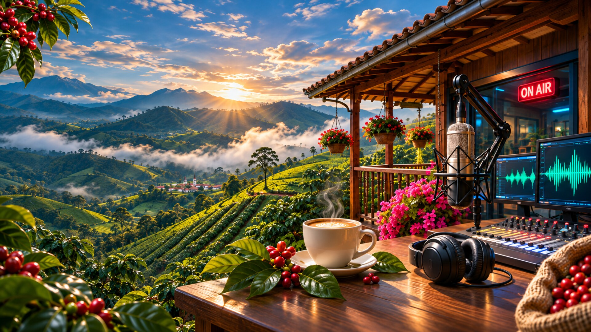

NOTICIAS DE LA REGIÓN
Ver más →REGIÓN

La radio de nuestra región
Selecciona un municipio para cambiar fotografías, noticias, eventos y contexto regional. El audio solo cambia cuando tú eliges escucharlo.
Envía un saludo para moderación o participa en la encuesta activa. El equipo editorial puede gestionar la participación desde su panel.